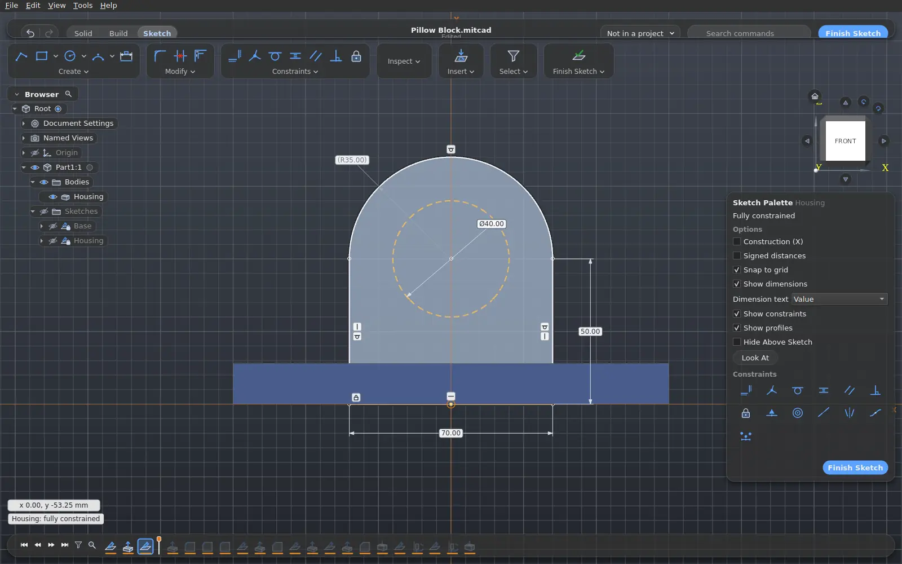
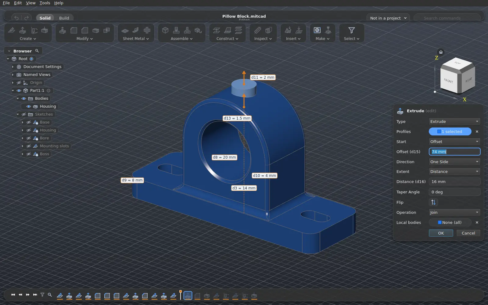
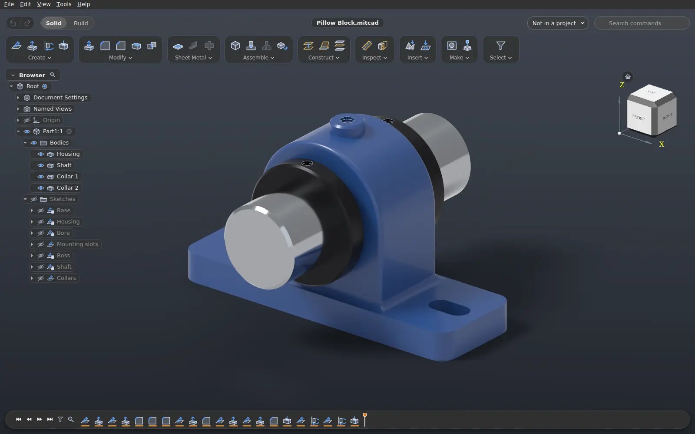

Parametric history
Features on a timeline and parameters with expressions. Edit a sketch or a dimension and the model rebuilds.
Open source · MIT licence
Mitcad is a desktop CAD application for Windows, Linux and macOS. Sketch with constraints, build features on a timeline, assemble components with joints – and change any dimension later.



Features
Design intent stays in the model: every feature remembers how it was made, so a change ripples through the whole design.
Features on a timeline and parameters with expressions. Edit a sketch or a dimension and the model rebuilds.
Lines, arcs, splines and text with geometric constraints and driving dimensions, solved live as you draw.
Components with joints that move them, interference and analysis tools, and a component library with a part picker.
Folded parts with flanges, cuts and reliefs; unfold, refold and a flat pattern exported to DXF.
Path-traced images with Cycles on the CPU, CUDA on NVIDIA GPUs or Metal on macOS, with appearances and environments.
Projects keep their versions in git: go back to any earlier version and share projects through a git host.
Send bodies straight to Bambu Studio, OrcaSlicer, PrusaSlicer or UltiMaker Cura, or export 3MF and STL.
A JSON command API, a command line tool and a Model Context Protocol server that lets AI agents build models.
Formats
FreeCAD and .f3d designs and .ipt parts open with their
history – features, sketches and parameters – so they stay editable. Building
models and the common exchange formats import and export too.
Why Mitcad
Mitcad was started because the world still lacked a CAD application that is easy to use, imports a wide range of file formats and runs on Linux as well. It is free to use, change and share under the MIT licence – for hobby projects and commercial work alike.
Download
Free, with no account and no time limit. Mitcad is under active development: new releases arrive often and the application offers them automatically.
Every release, its notes and checksums: GitHub releases. Building it yourself: the build guide.
Report a file that does not import as it should, ask for a feature or send a pull request – AI-assisted contributions are welcome too.